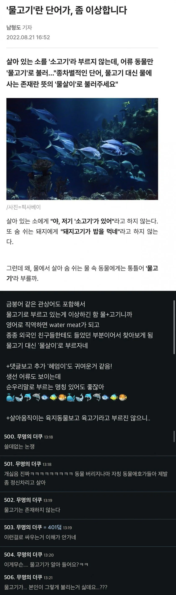

water meat?
자 따라해봐 fish

water meat?
자 따라해봐 fish
고기를 잡으러 바다로 갈까나 고기를 잡으러 산으로 갈까나 이 병에 가득히 넣어가지고서 랄랄랄라 온다야
이거보고 소고기 닭고기 돼지고기로 부르기로했다
지들이 하던짓인데 거울보고 발작ㅋㅋㅋ
"생선"
하여간 사이버도덕선생 ㅋㅋ
미친년들 ㅋㅋㅋ
육고기란 말도 자주 쓰는디
물고기는 없다를 책을 보면 맞말이긴하지
생선이란 단어를 모르나
영어 메뉴판에 fish 있는거 알면 까무러치겠네
직역하면 fish지 왜 watermeat야 미친년인가 진짜 ㅋㅋ
기레기
어제 네이버뉴스에 고양이보고
비인간 이지랄하던거 생각나네
고기도 물고기를 의미하는 단어긴 한데 ... 하.....
저런애들도 글을 쓰고 단어에 대한 토론을 하는 걸보니
한글은 정말 좋은 언어라고 생각이 드네
물고기를 물살이로 바꿀 시간에 과학자되어서 배양육 만들어서 도살안당하는게 물살이들이 고마워할듯
아 씨발 지랄 좀 그만해
선진국 다됐어
한번도 생각해본 적 없는데 나름 일리는 있지않나ㅋㅋ
다만 동물권 보호목적으로 물고기의 대체어를 물살이로 하기보다
물에사는 모든 생물을 포괄하는 어류의 순우리말 순화어로 물살이를 하자는게 더 설득력 있었을듯
물살이라는 단어는 나름 귀여움
육지동물 땅살이 수상동물 물살이
생선님